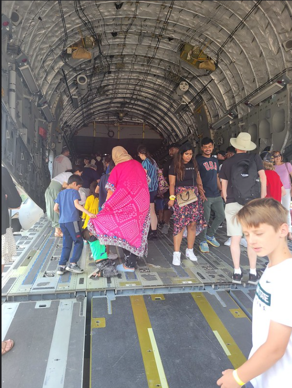
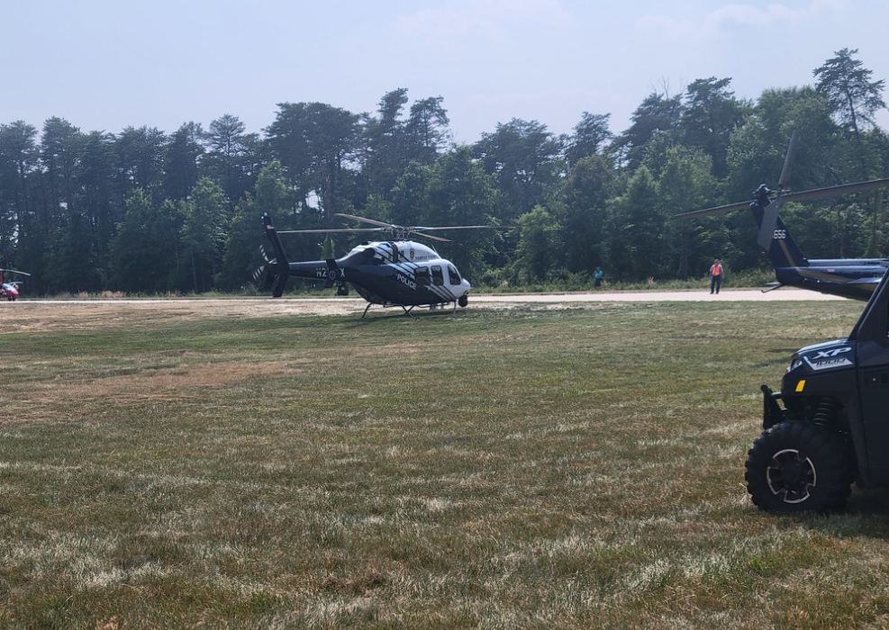

My Visit to the Udvar‑Hazy Air & Space Museum
In the summer of 2024, I visited the Steven F. Udvar‑Hazy Air & Space Museum, and it was truly an amazing experience. The second I walked into the hangar, I was blown away by the sheer number of aircraft on display and the giant space shuttle positioned in the middle. Walking past the Concorde, the world's first supersonic passenger jet, and the Enola Gay, the plane that dropped the first nuclear bomb on Japan, gives a real sense of history. That day, I was there for an airshow event where people who owned aircraft, as well as police, news outlets, and even the military, flew their planes, helicopters, and Cessnas out to an airstrip just outside the hangar for people like me to explore up close. It was an incredibly hot afternoon, and I remember how much I wanted to climb onto the Airbus A300 parked on the side, but alas, I never got the chance. While I was inside, I was reminded of the times I had visited years prior with some good friends, and the simulation rides they offer are still incredibly intense and a little nauseating. The hangar itself is absolutely massive, with walkways and four flights of stairs just to reach certain aircraft. There’s a whole section dedicated to spaceflight, including where the real Space Shuttle Discovery is located. No camera or video can do this spacecraft justice—it is HUGE and awe-inspiring. Every corner of the museum offers something new, from vintage jets to interactive exhibits, and it’s easy to spend hours wandering, learning, and imagining what it must have been like to pilot some of these historic aircraft. I also loved seeing the small details on each display, like original cockpit instruments, signage, and historical photos, which made the experience feel more personal and real.
 
I think the Udvar‑Hazy Center and its massive hangar are a must-visit for any space or aviation enthusiast. Its close connection to Dulles International Airport is impressive—it’s literally right alongside the airport and even has its own taxiway. During the airshow, you could see aircraft taking off and hear the roar of helicopters lifting off, which is super cool… except for the part where the rotors blast grass and dust into your eyes. That part definitely sucks, but it doesn’t take away from the thrill of being so close to all the action.
Learn more about NVCC: Visit NVCC
Research resources on JSTOR: Visit JSTOR